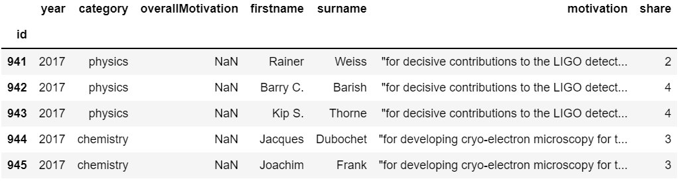
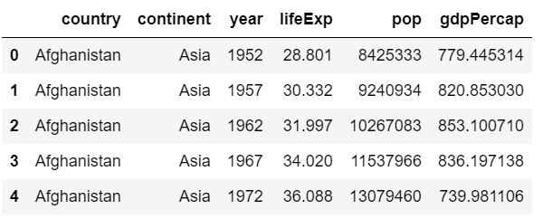

3 Pandas DataFrame 入门¶
学习目标¶
- 掌握DataFrame加载数据文件的方法
- 知道如何加载部分数据
- 知道如何对数据进行简单的分组聚合操作
1 加载数据集¶
- 做数据分析首先要加载数据，并查看其结构和内容，对数据有初步的了解
- 查看行，列
-
查看每一列中存储信息的类型
-
Pandas 并不是 Python 标准库，所以先导入Pandas
import pandas as pd -
导入Pandas库之后，通过read_csv加载文件
-
加载CSV文件
- csv文件 Comma-Separated Values
nobel = pd.read_csv('data/nobel_prizes.csv', index_col='id') # 加载nobel_prizes.csv文件 nobel.head() # 展示前5条数据
-
加载TSV文件
- tsv文件 Tab-Separated Values
# 参数1 要加载的文件路径，参数2sep 传入分隔符，默认是',' '\t'制表符 gapminder = pd.read_csv('data/gapminder.tsv',sep='\t') gapminder.head()
-
可以通过Python的内置函数type查看返回的数据类型
type(gapminder)输出结果
pandas.core.frame.DataFrame -
每个dataframe都有一个shape属性，可以获取DataFrame的行数，列数
- 注：shape是属性 不是方法 不可以使用df.shape() 会报错
gapminder.shape输出结果
(1704, 6) -
可以通过DataFrame的columns属性获取DataFrame中的列名
gapminder.columns输出结果
Index(['country', 'continent', 'year', 'lifeExp', 'pop', 'gdpPercap'], dtype='object') -
如何获取每一列的数据类型？
- 与SQL中的数据表类似，DataFrame中的每一列的数据类型必须相同，不同列的数据类型可以不同
- 可以通过**dtypes属性**，或者**info()**方法获取数据类型
gapminder.dtypes输出结果
country object continent object year int64 lifeExp float64 pop int64 gdpPercap float64 dtype: objectgapminder.info()输出结果
<class 'pandas.core.frame.DataFrame'> RangeIndex: 1704 entries, 0 to 1703 Data columns (total 6 columns): # Column Non-Null Count Dtype --- ------ -------------- ----- 0 country 1704 non-null object 1 continent 1704 non-null object 2 year 1704 non-null int64 3 lifeExp 1704 non-null float64 4 pop 1704 non-null int64 5 gdpPercap 1704 non-null float64 dtypes: float64(2), int64(2), object(2) memory usage: 80.0+ KB -
Pandas与Python常用数据类型对照
Pandas类型 Python类型 说明 Object string 字符串类型 int64 int 整形 float64 float 浮点型 datetime64 datetime 日期时间类型，python中需要加载
2 查看部分数据¶
2.1 根据列名加载部分列数据¶
- 加载一列数据，通过DataFrame['列名']方式获取
nobel_firstname = nobel['firstname']
#获取数据前5行
nobel_firstname.head()
输出结果
id 941 Rainer 942 Barry C. 943 Kip S. 944 Jacques 945 Joachim Name: firstname, dtype: object
-
通过列名加载多列数据，通过DataFrame[['列名1','列名2',...]]
-
注意这里是两层[] 可以理解为DataFrame[列名的list]
subset = nobel[['firstname', 'surname']]
#打印后五行数据
subset.tail()
输出结果
firstname surname id 160 Jacobus Henricus van 't Hoff 293 Emil Adolf von Behring 569 Sully Prudhomme 462 Jean Henry Dunant 463 Frédéric Passy
2.2 按行加载部分数据¶
- loc：通过行索引标签获取指定行数据
#先打印前5行数据 观察第一列
nobel.head()
显示结果
year category overallMotivation firstname surname motivation share
id
941 2017 physics NaN Rainer Weiss "for decisive contributions to the LIGO detect... 2
942 2017 physics NaN Barry C. Barish "for decisive contributions to the LIGO detect... 4
943 2017 physics NaN Kip S. Thorne "for decisive contributions to the LIGO detect... 4
944 2017 chemistry NaN Jacques Dubochet "for developing cryo-electron microscopy for t... 3
945 2017 chemistry NaN Joachim Frank "for developing cryo-electron microscopy for t... 3
- 上述结果中发现，最左边一列是id，这一列的数据是DataFrame的**行索引**，默认情况Pandas会使用[0,1,2,...]作为的行索引，这里我们指定了id作为行索引。
- 我们可以使用 .loc 方法传入行索引，来获取DataFrame的部分数据（一行，或多行）
# 获取第一行数据
nobel.loc[941]
显示结果
year 2017
category physics
overallMotivation NaN
firstname Rainer
surname Weiss
motivation "for decisive contributions to the LIGO detect...
share 2
Name: 941, dtype: object
-
使用tail方法获取最后一行数据
df.tail(n=1) #tail方法默认输出一行 传入n=1控制只显示1行输出结果
year category overallMotivation firstname surname motivation share id 463 1901 peace NaN Frédéric Passy NaN 2# 获取最后一行数据，并打印 nobel.loc[463]显示结果
year 1901 category peace overallMotivation NaN firstname Frédéric surname Passy motivation NaN share 2 Name: 463, dtype: object -
注意：nobel.loc 和 nobel.tail 两种方式获得的最后一行数据有些不同
- 我们可以打印两种结果的类型
subset_loc = nobel.loc[463] subset_tail = nobel.tail(n=1) print(type(subset_loc)) print(type(subset_head))输出结果
<class 'pandas.core.series.Series'> <class ’pandas.core.frame.DataFrame’> -
loc：通过索引标签获取指定多行数据
nobel.loc[[941, 945]]
输出结果
year category overallMotivation firstname surname motivation share id 941 2017 physics NaN Rainer Weiss "for decisive contributions to the LIGO detect... 2 945 2017 chemistry NaN Joachim Frank "for developing cryo-electron microscopy for t... 3
-
iloc : 通过行号获取行数据
-
在当前案例中，使用iloc 和 loc效果是一样的
- 需要注意的是，iloc传入的是行号/列号，loc是行索引/列名
- 并不是所有情况下索引标签=索引序号
# 获取第一行数据，并打印
nobel.iloc[0]
输出结果
year 2017 category physics overallMotivation NaN firstname Rainer surname Weiss motivation "for decisive contributions to the LIGO detect... share 2 Name: 941, dtype: object
#获取第100行数据，并打印
nobel.iloc[99]
输出结果
year 2009 category medicine overallMotivation NaN firstname Elizabeth H. surname Blackburn motivation "for the discovery of how chromosomes are prot... share 3 Name: 835, dtype: object
# 获取最后一行 通过shape 获取一共有多少行
number_of_rows = nobel.shape[0]
# 总行数-1 获取最后一行行索引
last_row_index = number_of_rows - 1
# 获取最后一行数据，并打印
nobel.iloc[last_row_index]
输出结果
year 1901 category peace overallMotivation NaN firstname Frédéric surname Passy motivation NaN share 2 Name: 463, dtype: object
- 使用iloc时传入-1可以获取最后一行数据
nobel.iloc[-1]
输出结果
year 1901 category peace overallMotivation NaN firstname Frédéric surname Passy motivation NaN share 2 Name: 463, dtype: object
- 注意 使用iloc时可以传入-1来获取最后一行数据，使用loc的时候不行
2.3 获取指定行/列数据¶
-
loc和iloc属性既可以用于获取列数据，也可以用于获取行数据
-
df.loc[[行]，[列]]
-
df.iloc[[行]，[列]]
-
使用 loc 获取数据中的1列/几列
-
df.loc[[所有行],[列名]]
- 取出所有行，可以使用切片语法 df.loc[ : , [列名]]
subset = nobel.loc[:, ['firstname', 'surname']]
subset.head()
输出结果
firstname surname id 941 Rainer Weiss 942 Barry C. Barish 943 Kip S. Thorne 944 Jacques Dubochet 945 Joachim Frank
-
使用 iloc 获取数据中的1列/几列
-
df.iloc[:,[列序号]] # 列序号可以使用-1代表最后一列
subset = nobel.iloc[:,[1,4,-1]]
subset.head()
输出结果
category surname share id 941 physics Weiss 2 942 physics Barish 4 943 physics Thorne 4 944 chemistry Dubochet 3 945 chemistry Frank 3
-
如果loc 和 iloc 传入的参数弄混了，会报错
-
loc 只能接受行/列的名字
subset = nobel.loc[:,[1,4,-1]]
subset.head()
输出结果
- iloc只能接受行/列的序号，不能传入行名，或者列名KeyError: "None of [Int64Index([1, 4, -1], dtype='int64')] are in the [columns]"
subset = nobel.iloc[:,['category','surname','share']]
subset.head()
输出结果
IndexError: .iloc requires numeric indexers, got ['category' 'surname' 'share']
- 通过range 生成序号，结合iloc 获取连续多列数据
tmp_range = list(range(5))
tmp_range
输出结果
[0, 1, 2, 3, 4]
subset = df.iloc[:,tmp_range]
subset.head()
输出结果
year category overallMotivation firstname surname id 941 2017 physics NaN Rainer Weiss 942 2017 physics NaN Barry C. Barish 943 2017 physics NaN Kip S. Thorne 944 2017 chemistry NaN Jacques Dubochet 945 2017 chemistry NaN Joachim Frank
-
在 iloc中使用切片语法获取几列数据
-
使用切片语法获取前三列
subset = nobel.iloc[:,3:6]
subset.head()
输出结果
firstname surname motivation id 941 Rainer Weiss "for decisive contributions to the LIGO detect... 942 Barry C. Barish "for decisive contributions to the LIGO detect... 943 Kip S. Thorne "for decisive contributions to the LIGO detect... 944 Jacques Dubochet "for developing cryo-electron microscopy for t... 945 Joachim Frank "for developing cryo-electron microscopy for t...
- 获取第0,2,4列
subset = nobel.iloc[:,0:6:2]
subset.head()
输出结果
year overallMotivation surname id 941 2017 NaN Weiss 942 2017 NaN Barish 943 2017 NaN Thorne 944 2017 NaN Dubochet 945 2017 NaN Frank
-
使用 loc/iloc 获取指定行，指定列的数据
-
使用loc
nobel.loc[941,'firstname']
输出结果
- 使用ilocRainer
nobel.iloc[0,3]
输出结果
Rainer
- 不要混淆loc和iloc，df.loc[42,0] 会报错
nobel.loc[0,3]
输出结果
KeyError: 0
-
获取多行多列
-
可以把获取单行单列的语法和获取多行多列的语法结合起来使用
- 获取 第一列，第四列，第六列（country,lifeExp,gdpPercap) 数据中的第1行，第20行和第30行
nobel.iloc[[0,19,29],[0,3,5]]
输出结果
- 在实际工作中，获取某几列数据的时候，建议传入实际的列名，使用列名的好处： - 增加代码的可读性 - 避免因列顺序的变化导致取出错误的列数据year firstname motivation id 941 2017 Rainer "for decisive contributions to the LIGO detect... 937 2016 Bob "for having created new poetic expressions wit... 917 2015 Satoshi "for their discoveries concerning a novel ther...
nobel.loc[[941,937,917],['year','firstname','motivation']]
输出结果
year firstname motivation id 941 2017 Rainer "for decisive contributions to the LIGO detect... 937 2016 Bob "for having created new poetic expressions wit... 917 2015 Satoshi "for their discoveries concerning a novel ther...
- 注意：可以在loc 和 iloc 属性的行部分使用切片获取数据
nobel.loc[941:938,['year','firstname','motivation']]
输出结果
year firstname motivation id 941 2017 Rainer "for decisive contributions to the LIGO detect... 942 2017 Barry C. "for decisive contributions to the LIGO detect... 943 2017 Kip S. "for decisive contributions to the LIGO detect... 944 2017 Jacques "for developing cryo-electron microscopy for t... 945 2017 Joachim "for developing cryo-electron microscopy for t... 946 2017 Richard "for developing cryo-electron microscopy for t... 938 2017 Jeffrey C. "for their discoveries of molecular mechanisms...
3 分组和聚合计算¶
-
在我们使用Excel或者SQL进行数据处理时，Excel和SQL都提供了基本的统计计算功能
-
当我们再次查看gapminder数据的时候，可以根据数据提出几个问题
print(gapminder.head(10))
输出结果
shell country continent year lifeExp pop gdpPercap 0 Afghanistan Asia 1952 28.801 8425333 779.445314 1 Afghanistan Asia 1957 30.332 9240934 820.853030 2 Afghanistan Asia 1962 31.997 10267083 853.100710 3 Afghanistan Asia 1967 34.020 11537966 836.197138 4 Afghanistan Asia 1972 36.088 13079460 739.981106 5 Afghanistan Asia 1977 38.438 14880372 786.113360 6 Afghanistan Asia 1982 39.854 12881816 978.011439 7 Afghanistan Asia 1987 40.822 13867957 852.395945 8 Afghanistan Asia 1992 41.674 16317921 649.341395 9 Afghanistan Asia 1997 41.763 22227415 635.341351
① 每一年的平均预期寿命是多少？每一年的平均人口和平均GDP是多少？
② 如果我们按照大洲来计算，每年每个大洲的平均预期寿命，平均人口，平均GDP情况又如何？
③ 在数据中，每个大洲列出了多少个国家和地区？
3.1 分组方式¶
-
对于上面提出的问题，需要进行分组-聚合计算
-
先将数据分组（每一年的平均预期寿命问题 按照年份将相同年份的数据分成一组）
- 对每组的数据再去进行统计计算如，求平均，求每组数据条目数（频数）等
- 再将每一组计算的结果合并起来
- 可以使用DataFrame的groupby方法完成分组/聚合计算
print(gapminder.groupby('year')['lifeExp'].mean())
显示结果
year 1952 49.057620 1957 51.507401 1962 53.609249 1967 55.678290 1972 57.647386 1977 59.570157 1982 61.533197 1987 63.212613 1992 64.160338 1997 65.014676 2002 65.694923 2007 67.007423 Name: lifeExp, dtype: float64
-
我们将上面一行代码拆开，逐步分析
-
通过gapminder.groupby('year')先创一个分组对象，如果打印这个分组的DataFrame，会返回一个内存地址
grouped_year_gapminder = gapminder.groupby('year')
print(type(grouped_year_gapminder))
print(grouped_year_gapminder)
显示结果
<class 'pandas.core.groupby.generic.DataFrameGroupBy'> <pandas.core.groupby.generic.DataFrameGroupBy object at 0x123493f10>
- 我们可以从分组之后的数据DataFrameGroupBy中，传入列名获取我们感兴趣的数据，并进行进一步计算
- 计算每一年的平均预期寿命，我们需要用到 lifeExp 这一列
- 我们可以使用上一小节介绍的方法获取分组之后数据中的一列
grouped_year_gapminder_lifeExp = grouped_year_gapminder['lifeExp']
print(type(grouped_year_gapminder_lifeExp))
print(grouped_year_gapminder_lifeExp)
显示结果
<class 'pandas.core.groupby.generic.SeriesGroupBy'> <pandas.core.groupby.generic.SeriesGroupBy object at 0x000001E1938D0710>
- 返回结果为一个 SeriesGroupBy （只获取了DataFrameGroupBy中的一列），其内容是分组后的数据
- 对分组后的数据计算平均值
mean_lifeExp_by_year = grouped_year_gapminder_lifeExp.mean()
print(mean_lifeExp_by_year)
显示结果
year 1952 49.057620 1957 51.507401 1962 53.609249 1967 55.678290 1972 57.647386 1977 59.570157 1982 61.533197 1987 63.212613 1992 64.160338 1997 65.014676 2002 65.694923 2007 67.007423 Name: lifeExp, dtype: float64
- 上面的例子只是对一列 lifeExp 进行了分组求平均，如果想对多列值进行分组聚合代码也类似
print(gapminder.groupby(['year', 'continent'])[['lifeExp','gdpPercap']].mean())
显示结果
- 上面的代码按年份和大洲对数据进行分组，针对每一组数据计算了对应的平均预期寿命 lifeExp 和 平均GDP - 输出的结果中 year continent 和 lifeExp gdpPercap 不在同一行， year continent两个行索引存在层级结构，后面的章节会详细介绍这种复合索引的用法 - 如果想去掉 year continent的层级结构，可以使用reset_index方法（重置行索引）lifeExp gdpPercap year continent 1952 Africa 39.135500 1252.572466 Americas 53.279840 4079.062552 Asia 46.314394 5195.484004 Europe 64.408500 5661.057435 Oceania 69.255000 10298.085650 1957 Africa 41.266346 1385.236062 Americas 55.960280 4616.043733 Asia 49.318544 5787.732940 Europe 66.703067 6963.012816 Oceania 70.295000 11598.522455 1962 Africa 43.319442 1598.078825 Americas 58.398760 4901.541870 Asia 51.563223 5729.369625 Europe 68.539233 8365.486814 Oceania 71.085000 12696.452430 1967 Africa 45.334538 2050.363801 Americas 60.410920 5668.253496 Asia 54.663640 5971.173374 Europe 69.737600 10143.823757 Oceania 71.310000 14495.021790 1972 Africa 47.450942 2339.615674 Americas 62.394920 6491.334139 Asia 57.319269 8187.468699 Europe 70.775033 12479.575246 Oceania 71.910000 16417.333380 1977 Africa 49.580423 2585.938508 Americas 64.391560 7352.007126 Asia 59.610556 7791.314020 Europe 71.937767 14283.979110 Oceania 72.855000 17283.957605 1982 Africa 51.592865 2481.592960 Americas 66.228840 7506.737088 Asia 62.617939 7434.135157 Europe 72.806400 15617.896551 Oceania 74.290000 18554.709840 1987 Africa 53.344788 2282.668991 Americas 68.090720 7793.400261 Asia 64.851182 7608.226508 Europe 73.642167 17214.310727 Oceania 75.320000 20448.040160 1992 Africa 53.629577 2281.810333 Americas 69.568360 8044.934406 Asia 66.537212 8639.690248 Europe 74.440100 17061.568084 Oceania 76.945000 20894.045885 1997 Africa 53.598269 2378.759555 Americas 71.150480 8889.300863 Asia 68.020515 9834.093295 Europe 75.505167 19076.781802 Oceania 78.190000 24024.175170 2002 Africa 53.325231 2599.385159 Americas 72.422040 9287.677107 Asia 69.233879 10174.090397 Europe 76.700600 21711.732422 Oceania 79.740000 26938.778040 2007 Africa 54.806038 3089.032605 Americas 73.608120 11003.031625 Asia 70.728485 12473.026870 Europe 77.648600 25054.481636 Oceania 80.719500 29810.188275
multi_group_var = gapminder.groupby(['year', 'continent'])[['lifeExp','gdpPercap']].mean()
flat = multi_group_var.reset_index()
print(flat.head(15))
显示结果
year continent lifeExp gdpPercap 0 1952 Africa 39.135500 1252.572466 1 1952 Americas 53.279840 4079.062552 2 1952 Asia 46.314394 5195.484004 3 1952 Europe 64.408500 5661.057435 4 1952 Oceania 69.255000 10298.085650 5 1957 Africa 41.266346 1385.236062 6 1957 Americas 55.960280 4616.043733 7 1957 Asia 49.318544 5787.732940 8 1957 Europe 66.703067 6963.012816 9 1957 Oceania 70.295000 11598.522455 10 1962 Africa 43.319442 1598.078825 11 1962 Americas 58.398760 4901.541870 12 1962 Asia 51.563223 5729.369625 13 1962 Europe 68.539233 8365.486814 14 1962 Oceania 71.085000 12696.452430
3.2 分组频数计算¶
-
在数据分析中，一个常见的任务是计算频数
-
可以使用 nunique 方法 计算Pandas Series的唯一值计数
- 可以使用 value_counts 方法来获取Pandas Series 的频数统计
- 在数据中，每个大洲列出了多少个国家和地区？
gapminder.groupby('continent')['country'].nunique()
显示结果
continent Africa 52 Americas 25 Asia 33 Europe 30 Oceania 2 Name: country, dtype: int64
4 简单绘图¶
- 可视化在数据分析的每个步骤中都非常重要，在理解或清理数据时，可视化有助于识别数据中的趋势
global_yearly_life_expectancy = gapminder.groupby('year')['lifeExp'].mean()
print(global_yearly_life_expectancy)
显示结果
- 可以通过plot画图year 1952 49.057620 1957 51.507401 1962 53.609249 1967 55.678290 1972 57.647386 1977 59.570157 1982 61.533197 1987 63.212613 1992 64.160338 1997 65.014676 2002 65.694923 2007 67.007423 Name: lifeExp, dtype: float64
global_yearly_life_expectancy.plot()
显示结果
<matplotlib.axes._subplots.AxesSubplot at 0x1e196e73f98>
![img]()
小结¶
- 本节课程介绍了如何使用Pandas的DataFrame加载数据，并介绍了如何对数据进行简单的分组聚合
pd.read_csv # 加载CSV文件
pd.loc # 从DataFrame中获取部分数据，传入索引名字
pd.iloc # 从DataFrame中获取部分数据，传入索引序号
pd.groupby # 分组